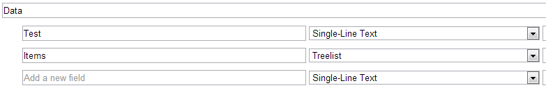

This tutorial applies to Glass.Mapper.Sc v3.0.5 or Glass.Mapper.Sc.Razor v3.0.4 or later.
This tutorial will look at how you can use Glass.Mapper to map rendering parameters onto an object.
For this tutorial I have a very simple rendering parameters template that contains two fields, the first field is a simple text field and the second field is a tree list field:
You can treat your models in the same way that you would treat any other models in Glass.Mapper, the only requirement is that the model must have the template ID of the rendering parameters template being used:
[SitecoreType(TemplateId = "{E67B11B2-ABE0-436A-8E45-736802166908}", AutoMap = true)]
public class ParametersTest
{
public virtual string Test { get; set; }
public virtual IEnumerable<Quick> Items { get; set; }
}
If your user control (Sublayout) inherits from the GlassUserControl you can call the GetRenderingParameters method to access rendering parameters:
public partial class Link : GlassUserControl<LinkModel>
{
protected override void OnLoad(EventArgs e)
{
var parameters = GetRenderingParameters<ParametersTest>()
base.OnLoad(e);
}
}
To access rendering parameters in a controller ensure that your controller inherits from the GlassController and use the GetRenderingParameters method:
public class TestController : GlassController
{
public override ActionResult Index()
{
var parameters = GetRenderingParameters<ParametersTest>();
return View(parameters);
}
}
Within a Razor view you can also access rendering parameters by inheriting the GlassView class:
@inherits Glass.Mapper.Sc.Web.Mvc.GlassView<GlassExamples.ParametersTest>
@{ var parameters = GetRenderingParameters<GlassExamples.ParametersTest>();}
If you are using a Glass Razor Code Behind rendering you can access rendering parameters using the GetRenderingParameters method:
public class BehindTest : AbstractRazorControl<ParametersTest>
{
public override ParametersTest GetModel()
{
var param = GetRenderingParameters<ParametersTest>();
return param;
}
}
And within the Razor view itself:
@using GlassExamples
@inherits Glass.Mapper.Sc.Razor.Web.Ui.TypedTemplate<dynamic>
@{ var parameters = GetRenderingParameters<ParametersTest>();}
Sometimes you might want to convert parameters outside one of the rendering methods used above, you can do this using the GlassHtml class:
var glassHtml = new GlassHtml(new SitecoreContext());
var parametersString =
"Test=hello+world&Items=032b690f-5113-44c4-aec7-a16b44382d4c%7c6cf01319-0234-42c8-aec1-fe757169f7a0";
var parameters = glassHtml.GetRenderingParameters<ParametersTest>(parametersString);